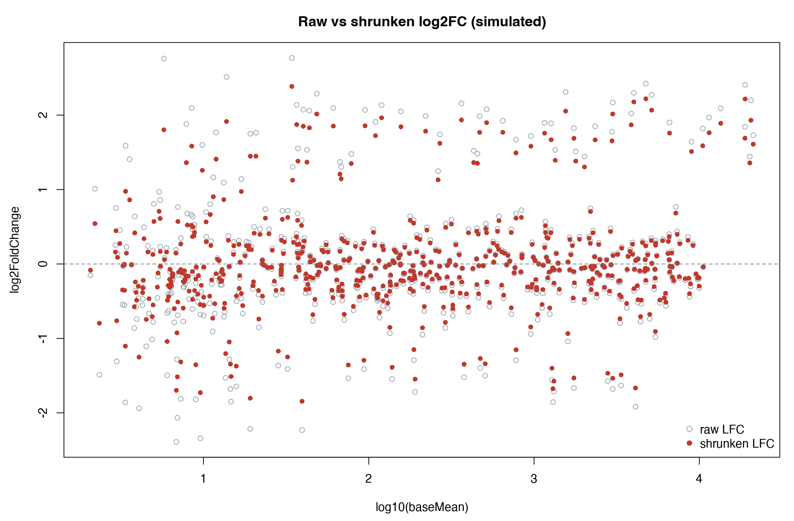

DESeq2 差异表达：从 Count 到结果表
承接 No.001 的 Count 矩阵：design 公式、预过滤、结果列逐项解读、LFC 收缩与多组比较，全套可运行代码。
从 Count 矩阵到差异表：全流程一览
上游产出 Count 矩阵后，差异分析只差四步：建对象 → 建模 → 提取结果 → 校正幅度。DESeq21基于负二项分布对原始 Count 直接建模，内置样本内离散度估计与 BH 多重校正，是 bulk RNA-seq 差异分析的事实标准。本文承接 No.001 的输出，把每一步代码与参数含义讲透。
| 步骤 | 函数 | 作用 |
|---|---|---|
| ① 建对象 | DESeqDataSetFromMatrix() | 绑定 Count 矩阵、样本信息表与 design 公式 |
| ② 建模 | DESeq() | 估计尺寸因子、离散度，拟合并检验 |
| ③ 提结果 | results() | 按 contrast 提取差异表 |
| ④ 校幅度 | lfcShrink() | 收缩低表达基因的夸张 log₂FC，便于排序展示 |
准备输入：Count 矩阵与样本信息表
featureCounts 输出的矩阵前 6 列是注释信息，需要剥掉；样本信息表（coldata）的行名必须与 Count 矩阵列名一一对应——这是 DESeq2 最常见的报错来源：
library(DESeq2)
## ① 读入 featureCounts 矩阵：剥掉前 6 列注释，清理 BAM 文件名后缀
fc <- read.delim("counts/featureCounts.txt", check.names = FALSE)
mat <- as.matrix(fc[, 7:ncol(fc)])
rownames(mat) <- fc$Geneid
colnames(mat) <- gsub("\\.Aligned.*$", "", colnames(mat))
## ② 样本信息表：每行一个样本，行名 = 矩阵列名
coldata <- read.csv("samplesheet.csv", row.names = 1)
coldata$condition <- relevel(factor(coldata$condition), ref = "normal")
## ③ 建对象：所有样本必须同处理、同版本注释（No.001 的要求）
dds <- DESeqDataSetFromMatrix(countData = mat,
colData = coldata,
design = ~ batch + condition)design 公式在建模前就要定好，它决定模型检验什么。常见写法：无批次因素 ~ condition；有批次因素 ~ batch + condition（感兴趣的变量放最后）；配对设计 ~ patient + condition。批次问题详见 No.006。
预过滤：不是所有基因都值得检验
几万个基因同时检验会稀释多重校正的预算——低表达基因贡献的几乎全是噪声。标准做法是先剔除「几乎所有样本里都数不到几个 reads」的基因：
## 至少 3 个样本中 count ≥ 10 才保留
keep <- rowSums(counts(dds) >= 10) >= 3
dds <- dds[keep, ]
nrow(dds) # 记录过滤前后基因数，写进方法学过滤标准不是铁律（有的流程用 CPM ≥ 1），但要在同一项目的所有分析中保持一致，并如实报告。
三步主流程与结果列解读
dds <- DESeq(dds) # 尺寸因子 → 离散度 → 拟合检验
res <- results(dds, contrast = c("condition", "tumor", "normal"))
res <- res[order(res$padj), ] # 按 FDR 从小到大排序
summary(res) # 一屏总览：上调/下调数量、过滤比例| 列 | 含义 | 注意 |
|---|---|---|
| baseMean | 标准化后平均表达量 | 低 baseMean 基因的 FC 不可信 |
| log2FoldChange | 组间倍数变化（log₂） | 低表达基因常被夸大 → 用 lfcShrink 收缩 |
| stat | Wald 检验统计量 | GSEA 排序就用它（No.005） |
| pvalue | 原始 p 值 | 未做多重校正，直接用会大量假阳性 |
| padj | BH 校正后 FDR | 筛选以此为准（参见 No.022） |
低表达基因的 log₂FC 方差天然巨大——同样 4 倍变化，baseMean=10 的基因远不如 baseMean=2000 的可信。lfcShrink 配合 apeglm2把这些夸张幅度拉回合理区间，让火山图与排序更稳健：
resultsNames(dds) # 查看 coef 名称，如 "condition_tumor_vs_normal"
resShrink <- lfcShrink(dds, coef = "condition_tumor_vs_normal",
type = "apeglm")
多组比较与似然比检验
三组以上（如 normal / early / late）逐对做 contrast 即可，无需重新建模；想知道「三组之间有没有任何差异」则用似然比检验（LRT），比较完整模型与删去分组项的简化模型：
## 任意两组：换 contrast 即可，dds 不用重跑
res_e_n <- results(dds, contrast = c("stage", "early", "normal"))
res_l_e <- results(dds, contrast = c("stage", "late", "early"))
## LRT：是否有「任何」组间差异（适合后续聚类/亚型分析）
dds_lrt <- DESeq(dds, test = "LRT", reduced = ~ batch)
res_lrt <- results(dds_lrt)最后导出结果表，交给可视化的富集分析：
write.csv(as.data.frame(resShrink), "DE_tumor_vs_normal.csv")解读三原则：① 筛选以 padj 为准，|log₂FC| > 1 只是常用的幅度参考，阈值该由研究问题定；② 不显著 ≠ 无差异，可能只是功效不够（样本量、离散度）；③ DESeq2 / edgeR3 / limma-voom4结果高度一致5，但不要在同一项目里混用。指标含义的更多陷阱见 No.022。
延伸阅读与参考文献
- Love MI, Huber W, Anders S. Moderated estimation of fold change and dispersion for RNA-seq data with DESeq2. Genome Biology. 2014;15:550. doi:10.1186/s13059-014-0550-8
- Zhu A, Ibrahim JG, Love MI. Heavy-tailed prior distributions for sequence count data: removing the noise and preserving large fold changes. Bioinformatics. 2019;35(12):2084–2092. doi:10.1093/bioinformatics/bty895
- Robinson MD, McCarthy DJ, Smyth GK. edgeR: a Bioconductor package for differential expression analysis of digital gene expression data. Genome Biology. 2010;11:R25. doi:10.1186/gb-2010-11-3-r25
- Law CW, Chen Y, Shi W, Smyth GK. voom: precision weights unlock linear model analysis tools for RNA-seq read counts. Nucleic Acids Research. 2014;42(7):e47. doi:10.1093/nar/gkv007
- Soneson C, Love MI, Robinson MD. Differential analyses for RNA-seq: transcript-level estimates, gene-level counts and robust methods are equally accurate. F1000Research. 2015;4:1521. doi:10.12688/f1000research.7563.2